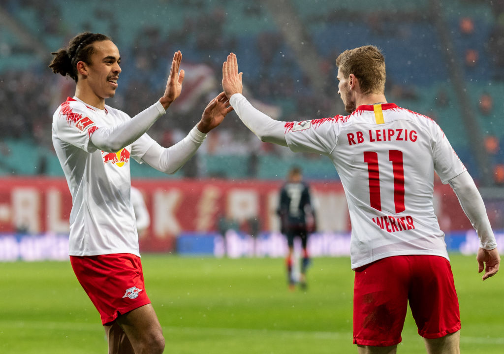

2. Peak Nagelsmann Football
This performance was simply Julian Nagelsmann at its finest. On a better day with more clinical finishing, Leipzig could have easily surpassed the 8 goals in their previous encounter with Mainz and possibly have gone into double digits. Leipzig was in full control of the game and never looked back. Their intensity was unmatched by Mainz and they fought for every second ball and took advantage of any lapse in concentration. Leipzig was ruthless with their pressing and that was shown when Sabitzer stripped the ball in midfield leading to a quick transition for the second goal. Leipzig dominated all aspects of the game crushing Mainz in shots on target 10-1 and expected goals 5.27-0.32 (understat.com).
3. Kampl is the Engine in Midfield
Although Werner rightly received most of the plaudits, Kevin Kampl controlled the game from midfield. He epitomized how Leipzig completely dominated opponents with quick ball movement and his passing opened up many opportunities for Werner, Poulsen, and Sabitzer. Overall, his clever touches and passes dictated the tempo of the game bringing calmness and composure to Leipzig. Werner’s second goal was set up on a platter by Kampl’s vision and one-two with Christopher Nkunku. On his day, Kampl is one of the top midfielders in the Bundesliga and the world.
4. Mainz Look like Relegation Candidates
Although they played a strong Leipzig side and will have more forgiving fixtures later, Mainz looked completely out of their depth. Their defending was appalling and affording the likes of Werner so much space is never a good idea. The whole back-line was very sloppy and late with their challenges and reactions. Mainz defenders seemed like they were casually strolling around when Werner scored his second and Leipzig’s fourth while Poulsen was left completely unmarked for a free header for the second goal. In the end, Müller looked like he’d completely given up when Werner poked in his third goal. The heavy loss leaves Mainz in 15th place hovering above the relegation zone. Having already fired Sandro Schwarz earlier in the season, Mainz will be expecting a lot from Achim Beierlorzer to keep them in the Bundesliga.
5. Poulsen is the Perfect Foil to Werner
Werner’s job is made a lot easier by Yussuf Poulsen’s work rate and clever positioning. The Danish striker was a menace for the Mainz defenders to deal with. Besides his impressive stats with his goal and two assists - a header, the pass to Sabitzer, and a clever free-kick, Poulsen’s physicality and pressing in harassing defenders provide Werner the space to use his pace. His ability to draw defenders was evident in the first goal when he shields a Mainz center back giving Werner the space to receive the cross. Poulsen’s efforts compliment Werner’s skillsets flawlessly and it's the reason why Werner and Leipzig have been able to thrive. His presence is essential to the RB Leipzig team and his impact is shown beyond the stat sheet.
